library(broom)
library(car) # box tidwell test
library(caret)
library(dbplyr)
library(data.table)
library(DataExplorer)
library(DBI)
library(DescTools) # for fit of logistic regression
library(devtools)
library(effects) # for log model plot
library(fastDummies)
library(hrbrthemes) # colour palets
library(inborutils) # for large files
library(kableExtra) # https://haozhu233.github.io/kableExtra/awesome_table_in_html.html
library(knitr)
library(performance)
library(data.table)
library(plotly)
library(pROC) #roc curves
library(readr)
library(rio)
library(RSQLite)
library(seriation) # test library that I never used. Infrastructure for ordering objects with ordination techniques. Provides optimally reordered heatmaps
library(tidyverse)# shouldn't need this after writing to SQLite db
# Ideas for larger DB in csv: bigmatrix package
# dat <- readRDS("C:/Users/Chris/OneDrive/R project/Open Policing/yg821jf8611_ca_statewide_2020_04_01.rds")This is my first time encountering a large dataset (3 million rows). After much stumbling in the dark and many articles I’ve linked the file to a SQLite database, made an object that is a subset of the file (20,000 rows) for initial analysis, then saved it as an RDS object that isn’t so big.
# Ok SQLite does not have a storage class for dates or times, but it seems reasonably fast
library(dplyr)
#The code below should only need to be done once:
#file_name <- "California_Policing"
# sqldb <- dbConnect(SQLite(), dbname = file_name)
# Writing
# dbWriteTable(sqldb, name = "Calfornia_Statewide_Policing", dat, row.names = FALSE, overwrite = TRUE, append = FALSE, field.types = NULL)
# Reading, only need to do once. Taking the first 20,000 rows.
#df <- tbl(sqldb, "Calfornia_Statewide_Policing") %>%
# select(-date, -raw_row_number) %>%
# filter(row_number() %in% c(1:20000)) %>%
# collect()
# saving it as a RDS file for future use
# saveRDS(df,"C:/Users/Chris/OneDrive/R project/Open Policing/Open Policing/df.rds")
# Ok this is our regular working object for now: 20,000 rows out of 3 million to work with
df <- readRDS("C:/Users/Chris/OneDrive/R project/Open Policing/Open Policing/df.rds")
# dbBegin(db) begins a transaction
# dbRollback(db) roll back reverts to original state
# dbCommit(db) 'commits' the data# Tidbit for future use
#The code below is an example for if you need to copy data over into a database:
#copy_to(con, nycflights13::flights, "flights",
# temporary = FALSE,
# indexes = list(
# c("year", "month", "day"),
# "carrier",
# "tailnum",
# "dest"
# )
#)DataExplorer package for intiial exploratory look.
Going to use glimpse on the data to get a look at the data. Glimpse reveals various location, vehicle, warning, and race information. Our variables are mostly categorical, with a lot of NA’s that I might want to replace with 0’s.
glimpse(df)## Rows: 20,000
## Columns: 19
## $ county_name <chr> "Stanislaus County", "Stanislaus County", "Stanislaus County", "Stanislaus ~
## $ district <chr> "Modesto", "Modesto", "Modesto", "Modesto", "Modesto", "Modesto", "Modesto"~
## $ subject_race <chr> "other", "hispanic", "hispanic", "white", "hispanic", "hispanic", "hispanic~
## $ subject_sex <chr> "male", "female", "female", "female", "male", "male", "female", "female", "~
## $ department_name <chr> "California Highway Patrol", "California Highway Patrol", "California Highw~
## $ type <chr> "vehicular", "vehicular", "vehicular", "vehicular", "vehicular", "vehicular~
## $ violation <chr> "Motorist / Public Service", "Moving Violation (VC)", "Moving Violation (VC~
## $ arrest_made <int> NA, 0, 0, 0, 0, 0, 0, 0, 0, 0, 0, 0, 0, 0, 0, 0, NA, NA, NA, NA, 0, 0, NA, ~
## $ citation_issued <int> NA, 0, 0, 0, 0, 0, 0, 0, 0, 0, 0, 0, 0, 0, 0, 0, NA, NA, NA, NA, 1, 0, NA, ~
## $ warning_issued <int> NA, 0, 0, 0, 0, 0, 0, 0, 0, 1, 0, 0, 1, 0, 0, 0, NA, NA, NA, NA, 0, 0, NA, ~
## $ outcome <chr> NA, "summons", "summons", "summons", "summons", "summons", "summons", "summ~
## $ contraband_found <int> NA, NA, NA, NA, NA, NA, NA, NA, NA, NA, NA, NA, NA, NA, NA, NA, NA, NA, NA,~
## $ frisk_performed <int> NA, NA, NA, NA, NA, NA, NA, NA, NA, NA, NA, NA, NA, NA, NA, NA, NA, NA, NA,~
## $ search_conducted <int> 0, 0, 1, 0, 1, 0, 0, 0, 0, 0, 0, 0, 0, 0, 0, 0, 0, 0, 0, 0, 0, 0, 0, 0, 0, ~
## $ search_person <int> 0, 0, NA, 0, NA, 0, 0, 0, 0, 0, 0, 0, 0, 0, 0, 0, 0, 0, 0, 0, 0, 0, 0, 0, 0~
## $ search_basis <chr> NA, NA, "other", NA, "other", NA, NA, NA, NA, NA, NA, NA, NA, NA, NA, NA, N~
## $ reason_for_stop <chr> "Motorist / Public Service", "Moving Violation (VC)", "Moving Violation (VC~
## $ raw_race <chr> "Other", "Hispanic", "Hispanic", "White", "Hispanic", "Hispanic", "Hispanic~
## $ raw_search_basis <chr> "Vehicle Inventory", "Probable Cause (positive)", "Probable Cause (positive~# This is unused but it's nice to know the way to find date range
#dat %>%
# select(date) %>%
# summarise(date_range = max(date) - min(date))plot_str(df)I’m not sure how nice this graph looks to be honest - will probably delete.
introduce(df)## # A tibble: 1 x 9
## rows columns discrete_columns continuous_columns all_missing_columns total_missing_v~ complete_rows
## <int> <int> <int> <int> <int> <int> <int>
## 1 20000 19 12 7 0 85795 0
## # ... with 2 more variables: total_observations <int>, memory_usage <dbl>Introduce is very useful, it’s telling me that there are a lot of missing values. The memory usage is in byes which is 2.5MB. Perhaps I could select more than 20,000 rows.
plot_missing(df)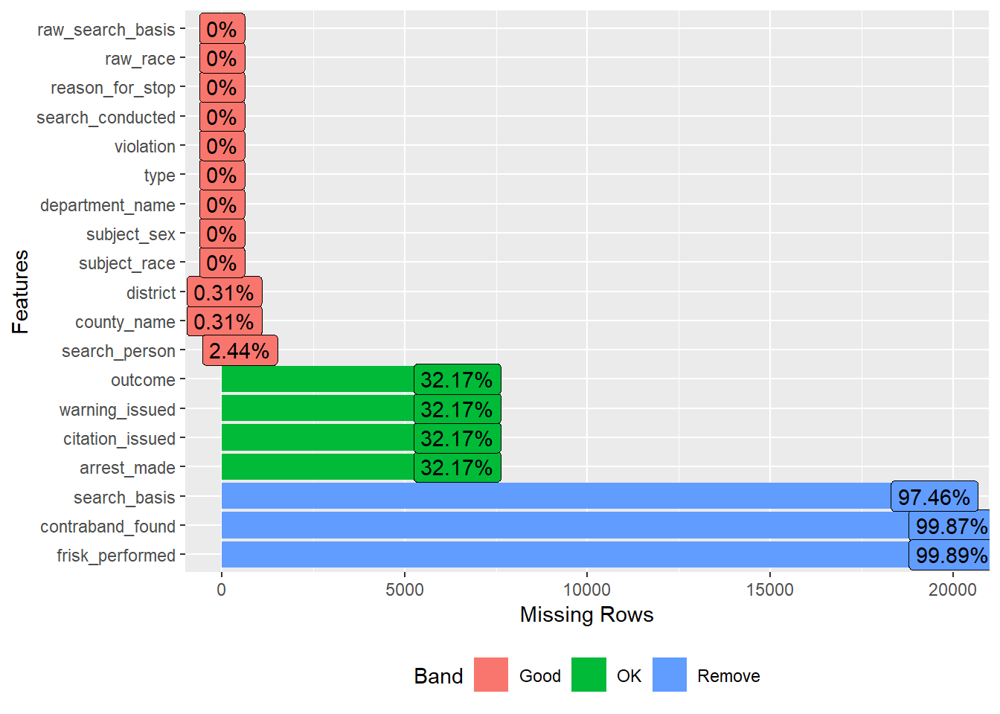 Whilst the NA’s in district, county_name and search_person seem to be genuine missing data, the other variables seem to be using NA as a geuine outcome. Let’s take a look at these columns:
df %>% select(outcome, warning_issued, citation_issued, arrest_made, search_basis, contraband_found, frisk_performed) %>%
distinct()## # A tibble: 19 x 7
## outcome warning_issued citation_issued arrest_made search_basis contraband_found frisk_performed
## <chr> <int> <int> <int> <chr> <int> <int>
## 1 <NA> NA NA NA <NA> NA NA
## 2 summons 0 0 0 <NA> NA NA
## 3 summons 0 0 0 other NA NA
## 4 warning 1 0 0 <NA> NA NA
## 5 citation 0 1 0 <NA> NA NA
## 6 arrest 0 0 1 other NA NA
## 7 <NA> NA NA NA other NA NA
## 8 arrest 0 0 1 <NA> NA NA
## 9 <NA> NA NA NA other NA 1
## 10 summons 0 0 0 other NA 1
## 11 summons 0 0 0 probable cause 1 NA
## 12 citation 0 1 0 other NA NA
## 13 warning 1 0 0 other NA NA
## 14 summons 0 0 0 probable cause 0 NA
## 15 arrest 0 0 1 consent 1 NA
## 16 arrest 0 0 1 probable cause 1 NA
## 17 warning 1 0 0 probable cause 1 NA
## 18 <NA> NA NA NA probable cause 0 NA
## 19 arrest 0 0 1 probable cause 0 NAThe frisk_performed column has only NA’s and 1’s. We can treat the NA’s as 0 i.e no frisk performed. arrest_made, citation_issued, warning_issued, outcome tend to have NA’s together for a row. I believe it is a reasonable assumption that nothing occured during these pull overs. Therefore we can replace these NA’s with 0’s. The search_basis is giving us ‘other’ or NA, so we should probably remove this column. Search_person can also replace NA’s with 0’s.
# Modifying all these NA entries:
df <- df %>%
replace_na(list(outcome = "nothing", warning_issued = 0, arrest_made = 0, citation_issued = 0, warning_issued = 0, contraband_found = 0, frisk_performed = 0, search_conducted = 0 )) %>%
select(-search_basis)
df <- df %>% replace_na(list(search_person = 0))plot_missing(df)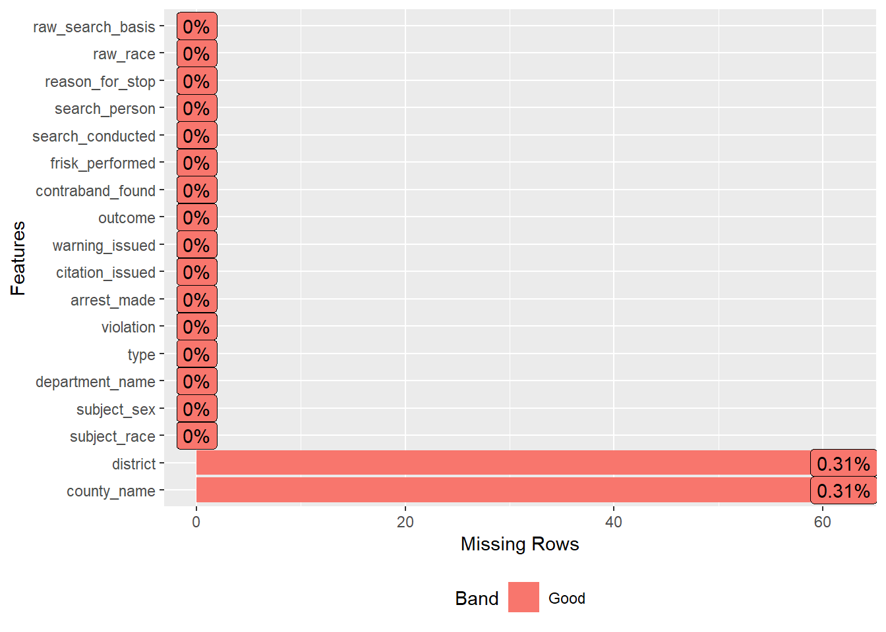 The district and county_name entries with NA entries can be treated as unusable data, we can remove them.
df <- df %>%
na.omit()plot_missing(df)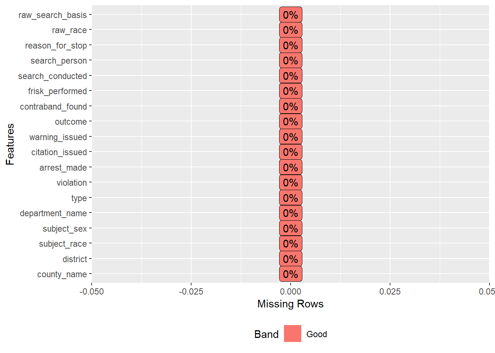 And we’re done cleaning the NA!
Needed some population data to compare our data to. These demographic statistics are from wikipedia.
df %>% distinct(subject_race)## # A tibble: 5 x 1
## subject_race
## <chr>
## 1 other
## 2 hispanic
## 3 white
## 4 black
## 5 asian/pacific islander# In the order of: asian/islander, black, hispanic, other, white
demo <- c(0.1452+0.0036, 0.0551, 0.3929, 0.0368, 0.3664)
# Numbers are taken from https://en.wikipedia.org/wiki/Demographics_of_California#/media/File:Ethic_California_Organized_Pie.png. The other category I obtained from 1 - sum(demo).ggplot(data = df) +
geom_count(mapping = aes(x = subject_race, y = outcome, color = ..n.., size = ..n..)) +
scale_size_area() +
scale_size_continuous(range = c(1,10)) +
ggtitle("Covariation Between Outcome and Race") +
labs(x ="Race of Subject", y = "Outcome") +
guides(color = "legend")## Scale for 'size' is already present. Adding another scale for 'size', which will replace the
## existing scale.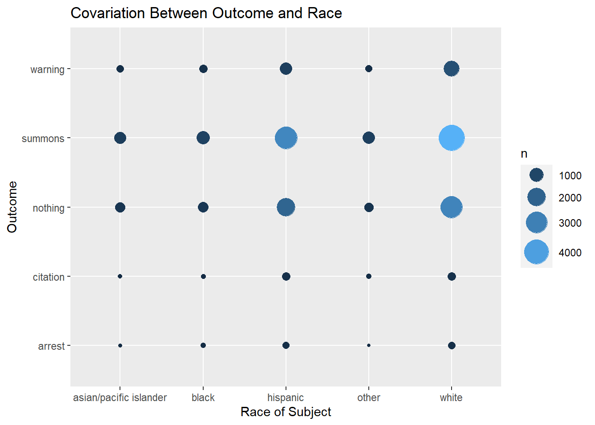 While this is not the most informative graph, it is interesting to note that quite few direct arrests. Most of the outcomes are summons or nothing. As one can expect, the circles are largest for the hispanic and white groups - the two groups with the largest samples. Let’s do a proportion graph:
ggplot(data = df) +
geom_count(mapping = aes(x = subject_race, y = outcome, color = ..prop.., size = ..prop.., group = 1)) +
scale_size_area() +
scale_size_continuous(range = c(1,10)) +
ggtitle("Covariation Between Outcome and Race") +
labs(x ="Race of Subject", y = "Outcome") +
guides(color = "legend")## Scale for 'size' is already present. Adding another scale for 'size', which will replace the
## existing scale.Show’s the same stuff, but it’s nice to know it’s easy to go between the two. We may also be interested in a heatmap version:
df %>%
count(subject_race, outcome) %>%
ggplot(aes(x = subject_race, y = outcome)) +
geom_tile(aes(fill = n))nrow(unique(df %>% count(subject_race,outcome)))## [1] 25# 25
colours <- colorRampPalette(c("blue", "green", "red"))(25)
df %>%
count(subject_race, outcome) %>%
ggplot(aes(x = subject_race, y = outcome)) +
geom_tile(aes(fill = n)) +
scale_fill_distiller(palette = "RdPu") # theme_ipsum() moves axis labels to the side
# Other options
# scale_fill_gradient(low = "White", high = "blue")
#
# scale_fill_brewer(palette = "PRGn") # scale_fill_brewer requires factor for fill. Ok it's limited to 11 different facotrs this is better for something that is discreteSame information is displayed but it’s definitely a more visually engaging method. The larger numbers of summons +hispanic/white really pop out. #### Test of single proportion
df %>%
group_by(subject_race) %>%
summarise(n = n()) %>%
mutate(rsum = sum(n))## # A tibble: 5 x 3
## subject_race n rsum
## <chr> <int> <int>
## 1 asian/pacific islander 1247 19938
## 2 black 1631 19938
## 3 hispanic 6377 19938
## 4 other 1279 19938
## 5 white 9404 19938We can see that 1631 out of 19938 individuals pulled over were black. Wikipedia states that 5.51% of the population in CA is of black race. We can test the hypothesis that \(H_0:\) The proportion of tested black race being 0.0551 is true \(H_1:\) The proportion of tested black race being 0.0551 is not true
prop.test(1631, 19938, 0.0551, conf.level = 0.95)##
## 1-sample proportions test with continuity correction
##
## data: 1631 out of 19938, null probability 0.0551
## X-squared = 272.56, df = 1, p-value < 2.2e-16
## alternative hypothesis: true p is not equal to 0.0551
## 95 percent confidence interval:
## 0.07805494 0.08571442
## sample estimates:
## p
## 0.08180359The extremely low p-vale suggests we reject the null hypothesis. The estimated proportion is 0.081 with a 95% confidence interval (0.078, 0.085). This suggests that there is some bias towards selecting black drivers to be pulled over.
# library(broom)
df_chisq <- df %>%
group_by(subject_race,outcome) %>% # the variables you want on the conteingency table
summarise(n = n()) %>% # need the totals
mutate(proportion = n/sum(n)) %>%
select(-proportion) %>% # Oh you definitely need to get rid of proportion here so it spreads properly
spread(outcome, n) %>% # contingency table obtained! Also got proportions...and then got rid of them should make them separate
ungroup() %>% # select will not remove in a grouped tibble
select(-1) %>%
chisq.test # %>% ## `summarise()` has grouped output by 'subject_race'. You can override using the `.groups` argument. glance() # can't decide if I want it glanced...not this time## # A tibble: 0 x 0df_chisq##
## Pearson's Chi-squared test
##
## data: .
## X-squared = 138.83, df = 16, p-value < 2.2e-16Testing of association between subject_race and outcome. The p-value is less than 0.05 so we reject the null hypothesis of no association and conclude that there is a association between the row variables (race) and column variables (outcome). Let’s have a look at the expected counts:
t1 <- round(as_tibble(df_chisq$expected),0)
t1## # A tibble: 5 x 5
## arrest citation nothing summons warning
## <dbl> <dbl> <dbl> <dbl> <dbl>
## 1 19 33 402 630 163
## 2 25 43 526 824 213
## 3 99 168 2055 3223 832
## 4 20 34 412 646 167
## 5 147 247 3030 4753 1227Compare it to the actual counts in data:
t2 <- df %>%
group_by(subject_race,outcome) %>% # the variables you want on the conteingency table
summarise(n = n()) %>% # need the totals
mutate(proportion = n/sum(n)) %>%
select(-proportion) %>% # Oh you definitely need to get rid of proportion here so it spreads properly
spread(outcome, n) %>% # contingency table obtained! Also got proportions...and then got rid of them should make them separate
ungroup() %>%
select(-1)## `summarise()` has grouped output by 'subject_race'. You can override using the `.groups` argument.Let’s compare them side by side:
t0 <- df %>%
group_by(subject_race,outcome) %>% # the variables you want on the conteingency table
summarise(n = n()) %>% # need the totals
mutate(proportion = n/sum(n)) %>%
select(-proportion) %>% # Oh you definitely need to get rid of proportion here so it spreads properly
spread(outcome, n) %>% # contingency table obtained! Also got proportions...and then got rid of them should make them separate
ungroup() %>%
select(1)## `summarise()` has grouped output by 'subject_race'. You can override using the `.groups` argument.t1a <- tibble(t0,t1)
t2a <- tibble(t0, t2)
kables(list(
kable(caption = "Expected counts", t1a) %>%
kable_classic() %>%
column_spec(3, color = spec_color(t1$arrest)),
kable(caption = "Actual counts", t2a) %>%
kable_classic() %>%
column_spec(3, color = spec_color(t2$arrest)))
) %>% kable_classic()
|
|
# wow this is cool. Hope it knits well
# kable classic makes it nice, but kable_styling() makes it unreadable for my dark-mode/markdown setup
# Other options: kable_paper, kable_classic_2, kable_material, kable_material_dark
# this is not bad At a glance we can see that some of the biggest differences occur for hispanic & warning, and black & citation. The ‘other’ group is defined a bit differently between the dataset and wikipedia so we shouldn’t draw too much from it.
# Cool kable concept that I want to explore later - but not now
#t1
#t1dt <- lapply(t1[1:ncol(t1),2:nrow(t1)], function(x) {
# cell_spec(x, bold = T,
# color = spec_color(x, end = 0.9), #generates viridus color
# font_size = spec_font_size(x, begin = 10, end = 16))
#})
#kbl(t1dt, escape = F, align = "c") %>%
# kable_classic("striped", full_width = F)And the most contributing cells to the total chi-square score:
subject_race <- c("asian/pacific islander", "black", "hispanic", "other", "white")
chisqres <- as_tibble(df_chisq$residuals) %>% add_column(subject_race, .before = 1)
chisqres## # A tibble: 5 x 6
## subject_race arrest citation nothing summons warning
## <chr> <dbl> <dbl> <dbl> <dbl> <dbl>
## 1 asian/pacific islander -1.69 -3.10 -0.391 1.82 -0.994
## 2 black 1.70 -2.73 -1.94 1.52 0.701
## 3 hispanic 1.56 3.51 0.640 0.158 -3.43
## 4 other -3.12 1.10 -3.50 4.43 -2.62
## 5 white -0.222 -1.03 1.72 -3.06 3.86The cells with the highest absolute standardized residuals contribute the most to the total chi-square score. Let’s visualise this:
ggplot(data = melt(chisqres), aes(x = subject_race,y = variable )) +
geom_raster(aes(fill = value)) +
scale_fill_gradient(low = "green", high = "red")## Warning in melt(chisqres): The melt generic in data.table has been passed a tbl_df and will attempt
## to redirect to the relevant reshape2 method; please note that reshape2 is deprecated, and this
## redirection is now deprecated as well. To continue using melt methods from reshape2 while both
## libraries are attached, e.g. melt.list, you can prepend the namespace like reshape2::melt(chisqres).
## In the next version, this warning will become an error.## Using subject_race as id variables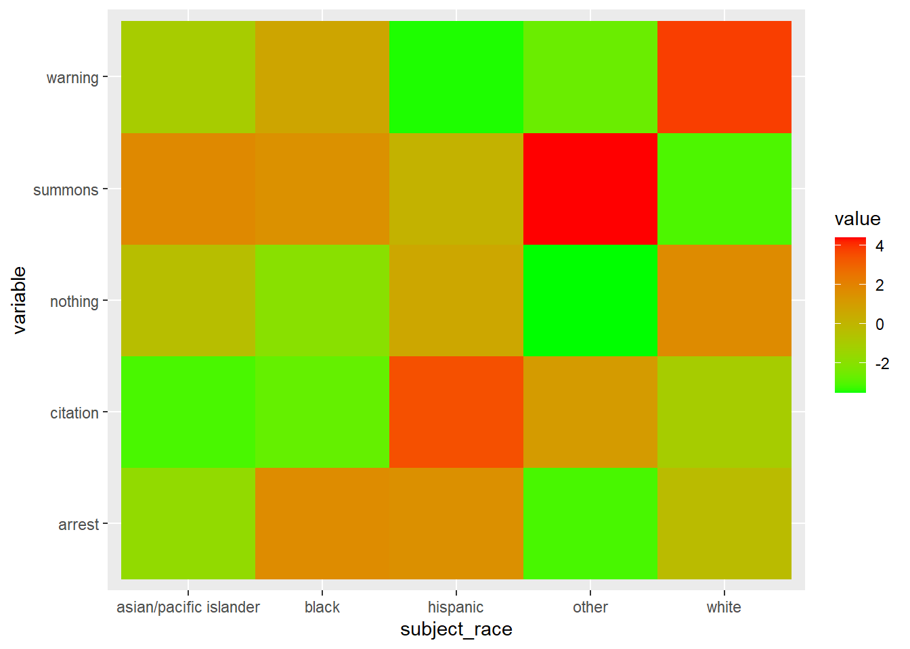 It can be seen that the column black is strongly associated with summons/arrest/warning but not strongly associated with nothing and citation.
model_df <- df %>%
filter(raw_search_basis == "Probable Cause (positive)" | raw_search_basis == "Probable Cause (negative)") %>%
mutate(across(where(is_character), as_factor)) %>%
select(subject_race, subject_sex, outcome, raw_search_basis, search_conducted)
set.seed(42)
rows <- sample(nrow(model_df)) # 11970 rows
# We'll use the first 8000 randomised entries for the model
train <- model_df[rows[1:8000], ]
test <- model_df[-rows[1:8000], ]
# And the rest for testing
model <- glm(raw_search_basis ~ subject_race, family = binomial(link = "logit"), data = train)
summary(model)##
## Call:
## glm(formula = raw_search_basis ~ subject_race, family = binomial(link = "logit"),
## data = train)
##
## Deviance Residuals:
## Min 1Q Median 3Q Max
## -1.0226 -0.8531 -0.8518 1.4033 1.6321
##
## Coefficients:
## Estimate Std. Error z value Pr(>|z|)
## (Intercept) -0.51683 0.04219 -12.251 < 2e-16 ***
## subject_racewhite -0.31039 0.05497 -5.646 1.64e-08 ***
## subject_raceother -0.30665 0.09978 -3.073 0.00212 **
## subject_raceblack 0.14104 0.08774 1.607 0.10795
## subject_raceasian/pacific islander -0.50861 0.10815 -4.703 2.57e-06 ***
## ---
## Signif. codes: 0 '***' 0.001 '**' 0.01 '*' 0.05 '.' 0.1 ' ' 1
##
## (Dispersion parameter for binomial family taken to be 1)
##
## Null deviance: 10164 on 7999 degrees of freedom
## Residual deviance: 10102 on 7995 degrees of freedom
## AIC: 10112
##
## Number of Fisher Scoring iterations: 4We now have a model depicting the relationship between a search being positive or negative and the race of the person being pulled over. The p-values are interpreted as whether there is a difference between the log-odds of the outcome between the intercept and the explanatory variable. All of the predictors are significant using p < 0.1 as the criteria but if we use p < 0.05 which is more standard then the model would reject subject_raceblack as being useful in the model.
calc_class_err = function(actual, predicted){
mean(actual != predicted)
}
probabilities <- predict(model, newdata = test, type = "response")
predicted.class <- ifelse(probabilities > 0.5, "Probable Cause (negative)", "Probable Cause (positive)")
test_table <- table(predicted.class, test$raw_search_basis)
test_table #<- rbind(test_table, c(0,0))##
## predicted.class Probable Cause (positive) Probable Cause (negative)
## Probable Cause (positive) 2667 1303# for prediction this model needs some adjustments
#rownames(test_table) <- c("Probable Cause (positive)",("Probable Cause (negative)"))
test_table##
## predicted.class Probable Cause (positive) Probable Cause (negative)
## Probable Cause (positive) 2667 1303#alc_class_err(actual = test$raw_search_basis, predicted = predicted.class)
# this doesn't tell the whole story.There is cause for concern in the table as the predicted class is only showing “Probable Cause (positive)” predictions. Lets obtain more metrics.
test1 <- test %>% mutate(raw_search_basis = ifelse(raw_search_basis == "Probable Cause (negative)", 1, 0))
cutoffs <- seq(0, 1, by = 0.05)
eff <- sapply(cutoffs, function(cutoff){
sum((probabilities > cutoff) == test1$raw_search_basis)/length(probabilities)
})
eff## [1] 0.3282116 0.3282116 0.3282116 0.3282116 0.3282116 0.3282116 0.3576826 0.5853904 0.6556675
## [10] 0.6717884 0.6717884 0.6717884 0.6717884 0.6717884 0.6717884 0.6717884 0.6717884 0.6717884
## [19] 0.6717884 0.6717884 0.6717884# Produce a ROC curve based on the current model.
test_roc = roc(test$raw_search_basis ~ probabilities, plot = TRUE, print.auc = TRUE)## Setting levels: control = Probable Cause (positive), case = Probable Cause (negative)## Setting direction: controls < cases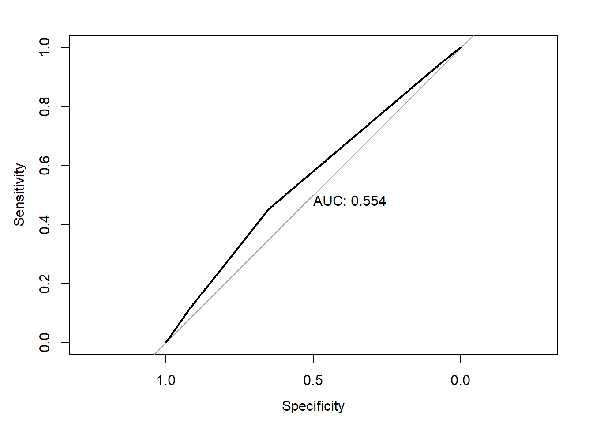
# 0.554 isn't very good. But we should use it to choose optimal threshold# extract the co-ordinates
mycoords <- coords(test_roc, "all")
best.coords <- coords(test_roc, "best", best.method = "youden")
best.coords## threshold specificity sensitivity
## 1 0.3393102 0.6505437 0.4520338Sensitivity is defined as the True Positive rate (sensitivity = \(\frac{TP}{TP + FN}\)). This is decently high for this model. Specificity is defined as the True Negate rate (specificity = \(\frac{TN}{TN + FP}\)}). We use 1 - Specificity to define the False Positive Rate. Lowering the classification threshold classifies more items as ‘positive’, increasing more false positives and true positives. Our optimal cutoff here using the “youden” method is 0.339, this will improve the classification power of the model.
probabilities <- predict(model, newdata = test, type = "response")
predicted.class <- ifelse(probabilities > 0.339, "Probable Cause (negative)", "Probable Cause (positive)")
test_table <- table(predicted.class, test$raw_search_basis)
test_table##
## predicted.class Probable Cause (positive) Probable Cause (negative)
## Probable Cause (negative) 932 589
## Probable Cause (positive) 1735 714Classification rate is \((1735+589)/(1735+589+932+714) = 0.585\), which is a lot better than 0.3 from earlier. The true positive rate is \(1735/1735+932 = 0.65\) which is the same as the sensitivity rate stated. The true negative rate is \(589/(589 + 714 = 0.45\) which is the specificity rate.
(Move ROC stuff here).
There are two very different approaches to answer this question. One is to get statistics on how well you can predict the dependent variable based on the independent variables (measures of predictive power). Examples would be R-square, the area under the ROC curve, and several rank-order correlations. Higher is better but there is rarely a fixed cut-off that distinguishes an acceptable model from one that is not acceptable.
The other approach is to compute a goodness-of-fit statistic. These test whether you can do better by making the model more complicated, specifically, adding non-linearities, adding interactions or chainging the link function. There are the deviance, Pearson chi-square or Hosmer-Lemeshow test. These are tests of the null hypothesis that the fitted model is correct, and their output is a p-value, with a higher value indicating a better fit. A p-value below some specified \(\alpha\) level would suggest that the model is not acceptable.
Important to note is that measures of predictive power and goodness-of-fit statistics are testing different things. As such a model with very high R-squared for example might have terrible goodness-of-fit statistics.
A bit more on goodness-of-fit (GOF) tests: they test whether there are any non-linearities or interactions. One can always produce a good fit by adding enough interactions and nonlinearities. The question is if you really need them to properly represent the data. GOF tests are designed to answer that question.
Small summary of GOF tests:
Lets look at our measures of predictiveness:
PseudoR2(model, which = c("McFadden", "CoxSnell","Tjur"))## McFadden CoxSnell Tjur
## 0.006121411 0.007746915 0.007816934All of these suggest that the predictive power is poor - which is definitely something we can agree on. The purpose of the model is to see the interaction rather than the predictive power anyway.
Now let’s take a look at the goodness of fit measures.
# To see if the deviance matters we take the full model and compare to the current one:
model1 <- glm(raw_search_basis ~., family = binomial,data = train)
summary(model1)##
## Call:
## glm(formula = raw_search_basis ~ ., family = binomial, data = train)
##
## Deviance Residuals:
## Min 1Q Median 3Q Max
## -2.0766 -0.9266 -0.7999 1.3818 1.7758
##
## Coefficients:
## Estimate Std. Error z value Pr(>|z|)
## (Intercept) -0.70328 0.05938 -11.844 < 2e-16 ***
## subject_racewhite -0.35205 0.05660 -6.220 4.98e-10 ***
## subject_raceother -0.31705 0.10225 -3.101 0.001931 **
## subject_raceblack 0.15472 0.08923 1.734 0.082936 .
## subject_raceasian/pacific islander -0.48982 0.10958 -4.470 7.83e-06 ***
## subject_sexmale 0.07990 0.05296 1.509 0.131388
## outcomewarning 0.55468 0.06294 8.813 < 2e-16 ***
## outcomecitation 2.50182 0.21688 11.535 < 2e-16 ***
## outcomenothing 1.41199 0.36489 3.870 0.000109 ***
## outcomearrest -0.23198 0.24339 -0.953 0.340533
## search_conducted -0.01848 0.17650 -0.105 0.916590
## ---
## Signif. codes: 0 '***' 0.001 '**' 0.01 '*' 0.05 '.' 0.1 ' ' 1
##
## (Dispersion parameter for binomial family taken to be 1)
##
## Null deviance: 10164 on 7999 degrees of freedom
## Residual deviance: 9827 on 7989 degrees of freedom
## AIC: 9849
##
## Number of Fisher Scoring iterations: 4anova(model, model1)## Analysis of Deviance Table
##
## Model 1: raw_search_basis ~ subject_race
## Model 2: raw_search_basis ~ subject_race + subject_sex + outcome + search_conducted
## Resid. Df Resid. Dev Df Deviance
## 1 7995 10102
## 2 7989 9827 6 274.56model2 <- glm(raw_search_basis ~ subject_race + outcome, family = "binomial", data = train)
anova(model, model1, model2)## Analysis of Deviance Table
##
## Model 1: raw_search_basis ~ subject_race
## Model 2: raw_search_basis ~ subject_race + subject_sex + outcome + search_conducted
## Model 3: raw_search_basis ~ subject_race + outcome
## Resid. Df Resid. Dev Df Deviance
## 1 7995 10101.6
## 2 7989 9827.0 6 274.56
## 3 7991 9829.3 -2 -2.29For a better model that fits the data, we would add “outcome” to the variables. The deviance is also almost as good as the saturated model. However this is not the purpose of the exercise so I will just leave it as an aside.
Let’s plot our model:
plot(allEffects(model)) # from effects package. typical = median is an alternative option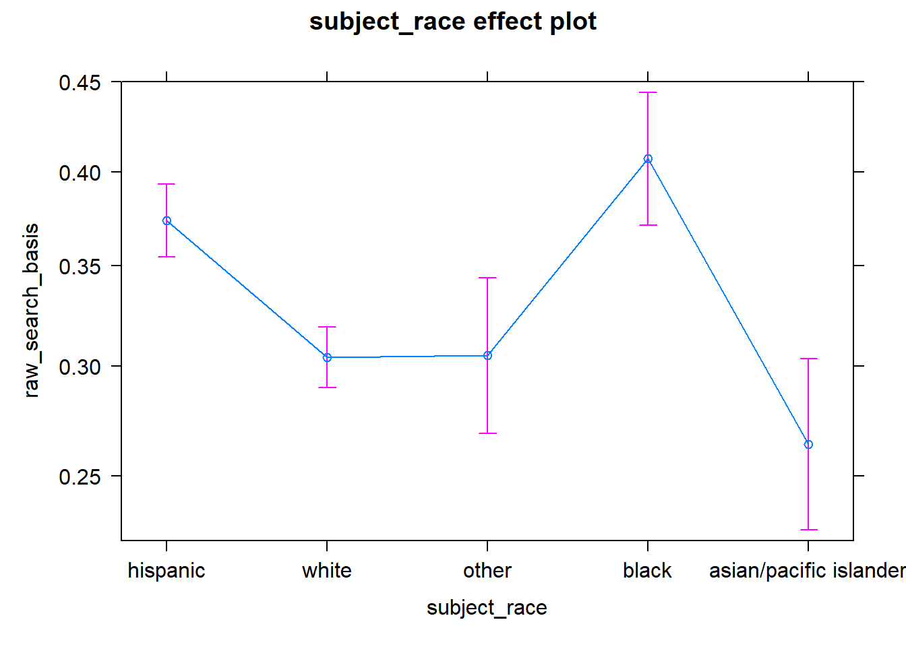 On the left hand side we have predicted probabilities for being a probable cause (negative). It also includes 95% confidence interval bars. There is a clear effect of black and hispanics being those more likely to be false alarms.
check_collinearity(model) # jokes only 1 variable## Warning: Not enough model terms in the conditional part of the model to check for multicollinearity.## NULLout_list <- check_outliers(train) # 218 outliers
dfbetas_model <- as_tibble(dfbetas(model)[out_list == TRUE, ])
dfbetas_model %>%
ggplot(aes(y = .[[1]], x = seq_along(dfbetas_model$`(Intercept)`))) +
geom_point() ## Warning: Use of `dfbetas_model$`(Intercept)`` is discouraged. Use `(Intercept)` instead.## Warning: Use of `.[[1]]` is discouraged. Use `.data[[1]]` instead.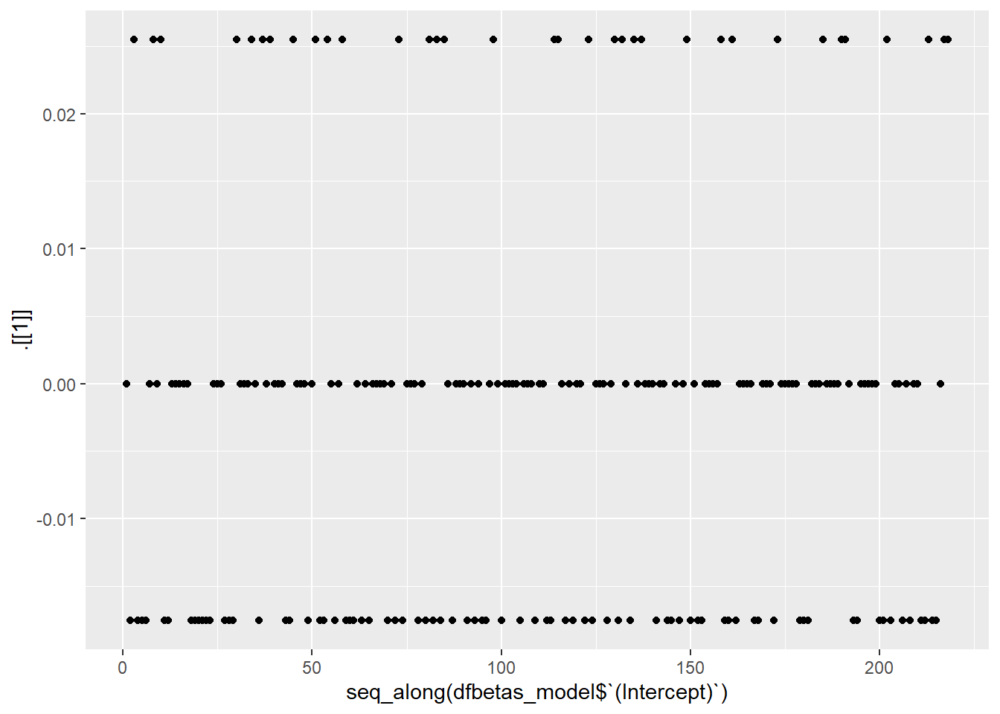
dfbetas_model %>%
ggplot(aes(y = .[[2]], x = seq_along(subject_raceblack))) +
geom_point() ## Warning: Use of `.[[2]]` is discouraged. Use `.data[[2]]` instead.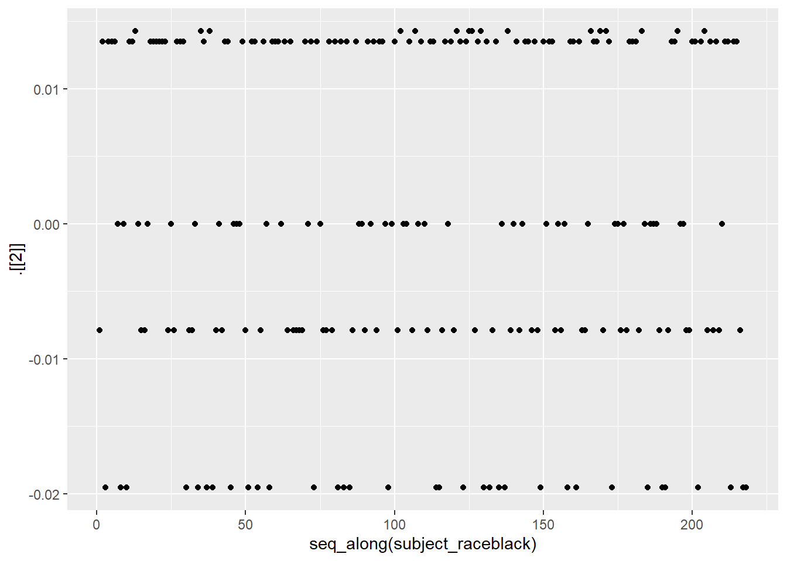
dfbetas_model %>%
ggplot(aes(y = .[[3]], x = seq_along(subject_raceblack))) +
geom_point() ## Warning: Use of `.[[3]]` is discouraged. Use `.data[[3]]` instead.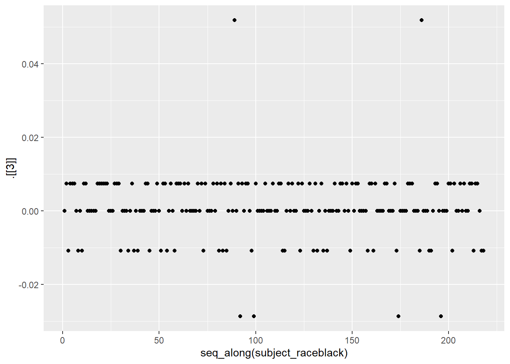 The only thing we can comment on here is that we can’t remove these outliers - they are an essential part of the data.
plot(model$fitted.values)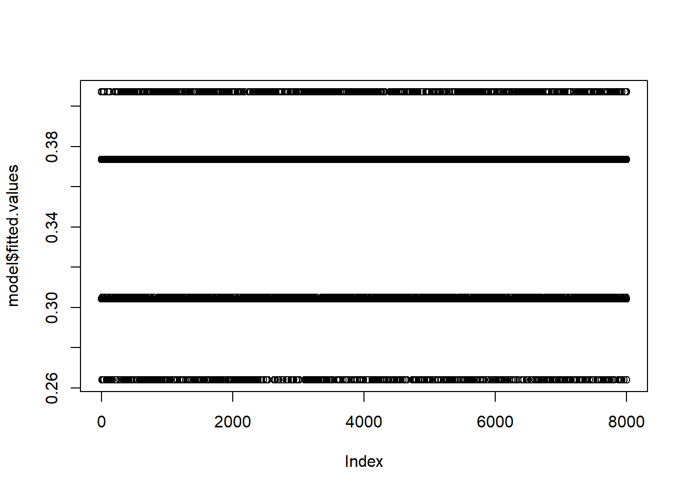
Let’s quickly see how R is dummy coding the variables:
contrasts(model_df$raw_search_basis)## Probable Cause (negative)
## Probable Cause (positive) 0
## Probable Cause (negative) 1Probable cause (positive) is coded as 0 while probable cause (negative) is coded as 1. We take exponential of the estimates for easier interpretation. Some of the notable interptations are:
model##
## Call: glm(formula = raw_search_basis ~ subject_race, family = binomial(link = "logit"),
## data = train)
##
## Coefficients:
## (Intercept) subject_racewhite
## -0.5168 -0.3104
## subject_raceother subject_raceblack
## -0.3066 0.1410
## subject_raceasian/pacific islander
## -0.5086
##
## Degrees of Freedom: 7999 Total (i.e. Null); 7995 Residual
## Null Deviance: 10160
## Residual Deviance: 10100 AIC: 10110# Showing this in quick view
exp(coef(model))## (Intercept) subject_racewhite
## 0.5964096 0.7331603
## subject_raceother subject_raceblack
## 0.7359083 1.1514688
## subject_raceasian/pacific islander
## 0.6013296ggplot(model_df, aes(raw_search_basis, fill = subject_race)) +
geom_bar(position = "fill")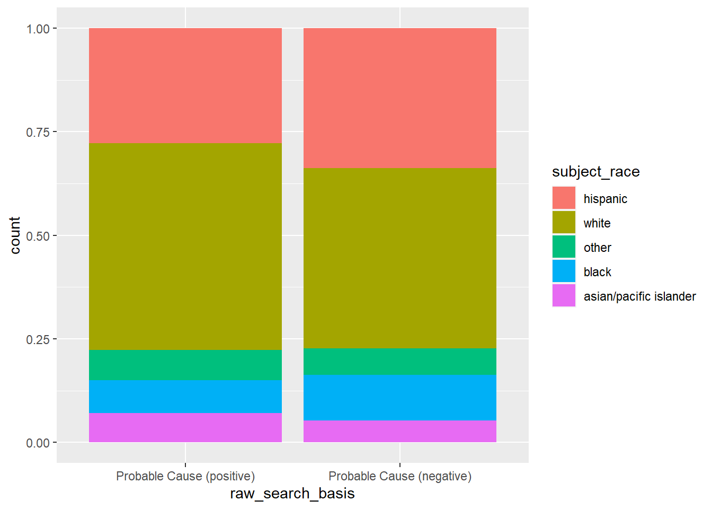 This makes sense when we look at the plot above, proportionally most of the false alarms
Now lets see the classification rate when we test the predictive ability of the model.
probabilities <- predict(model, newdata = test, type = "response")
predicted.class <- ifelse(probabilities > 0.327, "Probable Cause (negative)", "Probable Cause (positive)")
table(predicted.class, test$raw_search_basis)##
## predicted.class Probable Cause (positive) Probable Cause (negative)
## Probable Cause (negative) 932 589
## Probable Cause (positive) 1735 714There is a problem with this model. If we change 0.32 to be the threshhold (based on ROC optimisation), then we get a 59% classification success rate. We shouldn’t use this model for predicting anyway.
There is bias against black persons. In terms of model there isn’t anything nice from logistic regression for prediction. Perhaps I should try classification trees, neural networks or support vector machines next.